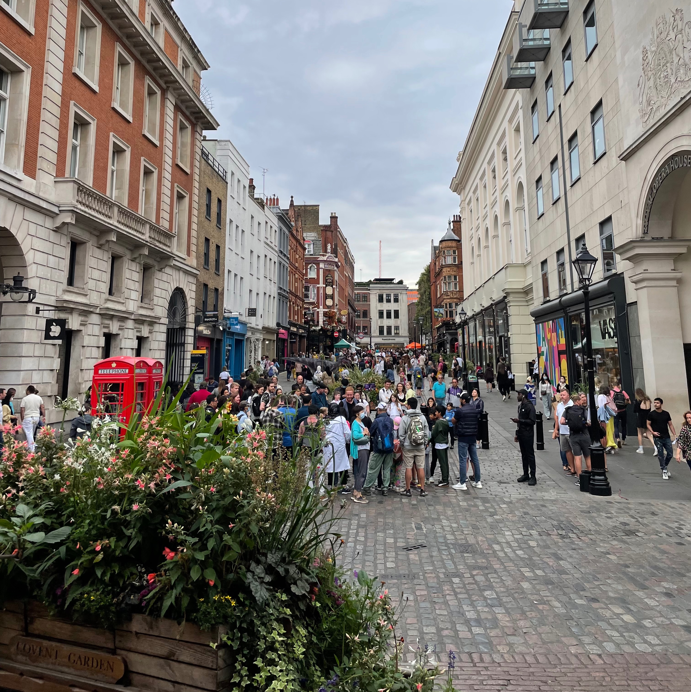

My name is Zain Bharde and I'm currently a Junior at Texas A&M University. I'm pursuing a
B.S. in Data Engineering and a minor in Computer Science. I'm greatly interested in software development,
machine learning, data engineering, AI, and cloud. Outside of school I enjoy playing
basketball, trying new restaurants with friends, and traveling. My favorite team is the Los Angeles Lakers,
and I hope to go to a home Lakers game one day!



I have always been someone who is not afraid to try and learn new things as I have had an entrepreneurial
experience early on. I started my own sneaker reselling business in high school, and this side hustle
stemmed from my affinity for sneakers, specifically the Nike Kobe Bryant basketball shoes. This
experience has taught me a lot about market analysis, problem solving, and risk management. I have
been able to transfer these skills to my academic and professional life. I am always looking for new
opportunities to learn and grow, and I enjoy the pursuit of knowledge in the technology field!